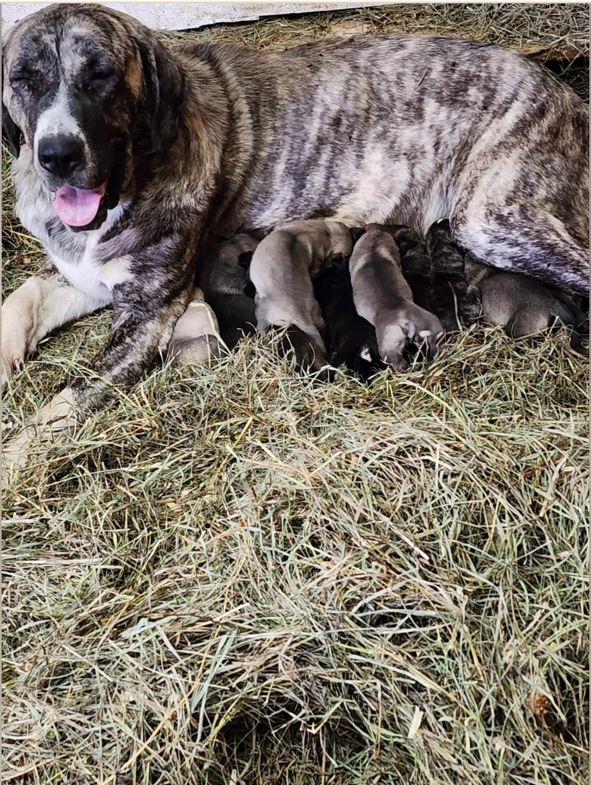

Talat × Zaina
Repeat of Kuma's pairing
The pairing that produced Kuma. Dates for the next litter are not set yet — ask to be put on the list and we will tell you before it is posted here.
Upcoming Litters
We breed a small number of litters out of our own dogs. Every pairing is posted here first, with photos and updates as the puppies grow.
Litter Board
Talat × Zaina
Repeat of Kuma's pairing
The pairing that produced Kuma. Dates for the next litter are not set yet — ask to be put on the list and we will tell you before it is posted here.
Tank × Paige
Ruby and Nala's pairing
Puppies from this pairing trace directly back to Minik, the world-record tallest Boz Shepherd, through their sire's side. Next litter to be announced.
How Placement Works
We place puppies one home at a time, and we would rather wait for the right fit than fill a litter quickly.
Tell us about your property, your animals, and what you need the dog to do. The reservation form is the fastest way to reach us.
We follow up by phone or text. This is where we work out whether a Boz Shepherd — and which puppy — actually suits your place.
A deposit reserves your place in the litter. Pricing, deposit, and pick order are all discussed directly, before anything is paid.
Photos and video updates from whelping through eight weeks, so you know your puppy well before you meet them.
Puppies leave vet-checked, with their records and their ARBA paperwork in hand — and we stay available long after.

Whelped Here
Our puppies are whelped and raised on the property, socialized with our family and livestock from day one. By the time they leave, they have met the animals they were bred to guard.
Send us a note and we will reach out before the pairing goes up on this page.